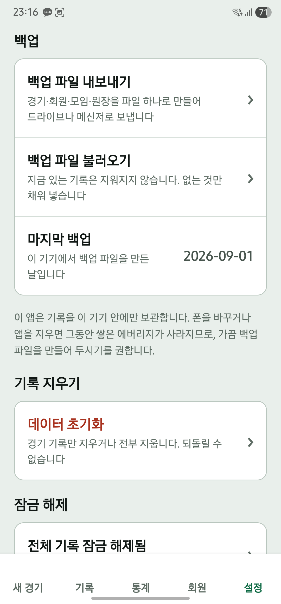

에버보드의 경기 기록은 내 기기에 저장됩니다. 휴대폰을 바꾸기 전, 혹은 소중한 기록이 많이 쌓였을 때 백업 파일을 한 번 만들어 두세요.
1. 쓰던 기기에서 백업 파일 내보내기
- 앱 하단의 설정을 엽니다.
- 백업 영역에서 백업 파일 내보내기를 누릅니다.
- 공유 화면에서 파일을 보관할 곳을 고릅니다. 새 기기에서도 접근할 수 있는 위치에 저장하세요.
- 저장한 위치에서 백업 파일이 실제로 있는지 확인합니다.
파일을 만들었다는 표시와 별개로, 앱 밖에 파일을 잘 보관했는지 확인하는 것이 중요합니다. 최근 경기를 친 뒤 다시 내보내면 그 시점의 기록을 보관할 수 있습니다.

2. 새 기기에서 백업 파일 불러오기
- 새 기기에 에버보드를 설치하고 백업 파일을 준비합니다.
- 설정 → 백업 파일 불러오기를 선택합니다.
- 기존 기기에서 보관한 백업 파일을 고릅니다.
- 안내에 표시된 내용을 확인하고 불러오기를 누릅니다.
- 기록과 회원 목록에서 필요한 기록이 들어왔는지 확인합니다.
불러온 기록은 현재 기기의 기존 기록과 합쳐집니다. 새 기기에서 기록을 확인한 뒤에 기존 기기를 정리하세요.
3. 유료 열람 권한은 구매 복원으로
백업 파일과 스토어 구매 내역은 서로 다릅니다. 구매했던 스토어 계정으로 로그인한 뒤, 설정의 전체 기록 잠금 해제 → 구매 복원을 사용하세요. 구매 복원에는 인터넷과 스토어 연결이 필요합니다.
백업 파일 불러오기
보관한 경기·회원 기록을 가져옵니다.
무료로 사용할 수 있습니다.
구매 복원
기존 구매를 확인해 유료 열람 권한을 되찾습니다.
경기 데이터를 가져오는 기능은 아닙니다.
파일을 불러오지 못했다면
- 에버보드의 ‘백업 파일 내보내기’로 만든 파일인지 확인하세요.
- 공유한 성적표 이미지나 개별 경기 파일은 전체 백업 파일과 다릅니다.
- 더 새로운 버전에서 만든 백업이라는 안내가 나오면 앱을 업데이트하세요.
- 파일이 손상되었다는 안내가 나오면 기존 기기에서 새 백업을 만들어 보세요.